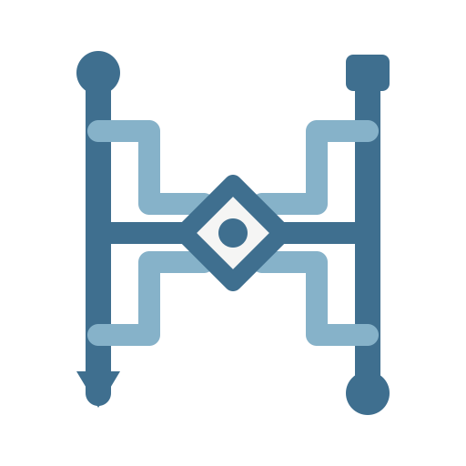
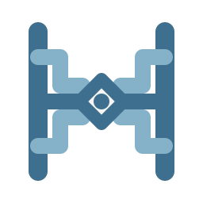

MASTER MARK · CIRCUIT TRACESD · FLOW LOOM
流织机 · 电路走线
中央部分恢复第一版的菱形方块与圆点，只把两侧连接改为水平线和直角折线。转折处保留焊盘节点，形成克制的 PCB 走线感。
原始中心正交走线资源总线

16
24
32
48

MASTER MARK · CIRCUIT TRACES中央部分恢复第一版的菱形方块与圆点，只把两侧连接改为水平线和直角折线。转折处保留焊盘节点，形成克制的 PCB 走线感。

四个标准圆沿上下左右均匀分布。中央采用连续垂直主干，左右资源节点通过两条无弧度的斜线向上汇入同一交点；顶部六边形严格居中。
多层开放轨迹像一张不断生长的资源地图：中央是稳定寻址的资源，外层是订阅路径与可替换链路。它更抽象，也最接近品牌符号。